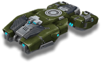
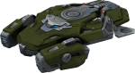

除炮塔外，任何坦克的重要组成部分都是强大的底盘。
好消息是，Tanki Online 中有很多此类底盘，从最轻、最快到最重、保护最好的都有。
与炮塔一样，每个底盘都有 7 个等级（从 Mk1 到 Mk7），您的等级越高，您可以购买的底盘等级就越高。
你可以在初级阶段尝试所有最流行的战术，而不必花费大量的水晶，
但在 MK2 之后，你不可能一次得到你想要的一切，所以找到你喜欢和擅长的各种船体它！
现在让我们更详细地看看每个底盘。这些描述将集中于船体的标准操作，没有装备改造。
轻型底盘
绕过地图的最快方式，这三个底盘在 MK1 时的 HP 均为 1000，在 MK7+ 时为 2000
轻型底盘。拥有最快和最高速度。过速装置植入计时炸弹。
一个小型轻型底盘，“黄蜂轻甲”看起来只对初学者不屑一顾。
小尺寸和高速在战场上提供真正的自由，但它的速度和机动性是一个令人愉快的额外好处。
从底盘结构中移除了所有不必要的部件，包括装甲，以便安装威力惊人的 N2 炸弹。
这种打开任何防御的工具实际上是一个微小的热核弹，可以在不损失速度的情况下投下它，
并使油轮能够迅速放弃未来的热点。
从附近的掩体上总是能更好地观察到非凡的烟花。

轻型底盘。转弯时可以进入短暂的漂移。过速装置允许看到战斗中的所有敌人。
具有空气动力学曲线的轻型底盘。
移动精美流畅，在障碍物和其他坦克之间小心滑动。
导致闪电般快速攻击的侦察行动需要一流的动态属性。
强大的雷达、热能面罩和多通道通信系统使加油机能够探测到战斗中的所有敌方坦克，
全面分析其当前状态，并向盟友发送命令。
此外，数据收集和处理的自动化系统使底盘能够稳定每次射击并击中目标装甲的薄弱点。
这使得“蜂王”成为任何侦察任务和快速打击敌人基地的必备品。

轻型底盘。它以出色的机动性翱翔在水面之上。
它的过速装置不仅可以击晕敌方坦克并点燃敌人的坦克，
还可以将您抛向空中，以便跳过障碍物。
«霍珀»悬停坦克使用最大可用的反重力发动机资源，让加油机追逐他们的梦想——远离危险飞上天空。
底盘没有装甲和防御系统，而是有一个爆炸跳跃引擎，可以将你的坦克扔到很高的高度。
Antigravs 在空中提供稳定性，创造巨大的战术机会。
在你跳跃的那一刻不幸靠近你的对手会后悔。
引爆引擎会立即使空气电离，使地面上爬行的一切都震惊和燃烧。
您是否有足够的勇气突破敌人的防御或带着旗帜进行令人惊讶的逃脱？«霍珀» 可以两者兼得。
中型底盘
这五种底盘多变且用途广泛，在 MK1 时的 HP 为 1500，在 MK7+ 时为 3000。

中型底盘。它悬停在地面上，可以在任何表面上毫无困难地移动。
它的过速装置应用在坦克周围的范围内，使坦克的装甲极化。
附近的友军免疫某些状态效果并持续受到治疗，而敌人则应用负面状态效果。
«圣骑士» 悬停坦克是作为支援坦克而创建的，以协助突击小组，保持小组的速度是必不可少的。
圣骑士拥有中型装甲并使用第二代反重力引擎，使其具有所需的速度。
它发挥辅助作用的方式是激活它的偏光片。
这种效果会持续很长时间，并且看起来像坦克周围的光环，可以为装甲充电
（根据一些坦克操作员的说法，水瓶也是如此），具有积极的效果。
极化盔甲可以为敌人使用的非凡武器提供更大的抵抗力，让你的攻击免于很多麻烦。
根据目击者的说法，极化水可以防止在水箱内受伤的奇异方式。
我们不完全确定这些玩家正在谈论什么样的奇异伤害方法。
中型底盘。在所有中型底盘中机动性最强。过速装置可以在短时间内解除对手的武装并让对手眩晕。
这种由强化装甲钢覆盖的底盘是最通用的。
它将非常适合活跃、充满活力的战斗的粉丝，以及喜欢在位置上比赛的坦克手。
您将永远不会失业，无论是保护一个点还是为废墟中的城市街区进行激烈的战斗。
底盘的名字来源于能够使用电磁脉冲并使所有敌人的生命成为活生生的地狱。
从掩体攻击，猎人中甲可以禁用整组坦克，将它们变成容易火力的目标。
如果你对一个有组织的敌方团队巧妙地使用补给感到恼火，那么选择猎人中甲。
在第一次掩护攻击后，所有敌方坦克将开始与你拉开越来越远的距离。

中型底盘。它在水面上空盘旋，可以毫无困难地通过任何恶劣的地形。
利用它的过速装置可以发射在很远的距离内压制敌方坦克的大冰柱。
第二代悬停坦克：为了创造一个紧凑但强大的具有攻击可能性的底盘，使用了许多巧妙的解决方案。
第二代反重力的紧凑性使工程师能够为坦克装备足够的装甲，使其成为中型底盘，而不会降低其速度。
攻击能力由内置大炮提供。为了满足尺寸要求，安装了低温发生器而不是超级强大的武器。
它通过冷却水分几乎从零中制造一个外壳，然后射出一个大的穿甲冰柱。
被冰块击中后，对手的大炮将被冻结，即使不摧毁坦克也很容易完成。

中型底盘。它是所有中型底盘中速度最快的。
过速装置可让射速增加，大大增加了炮塔的伤害。
这种底盘包含所有最新的军事技术，结合在一件工程艺术中。
增强的装甲和第二代履带系统使该底盘成为出色的通用坦克。
底盘可用于任何类型的战斗任务——从战略防御到全面正面攻击。
以北方传说中的勇士命名，“维京”是过速激活后最可怕的。
增压武器系统将大大提高安装在船体上的任何炮塔的射击速度，以难以置信的轻松将敌人扫出战场。
其超能力的最佳用途是发动突然袭击，
因为在所有气缸上开火维京很快就成为敌方狙击手的主要目标。
这是公平的，考虑到真正的战士总是直面死亡。

中型底盘。以稳定性和大小着称。
过速装置会为自己和附近所有盟友激活所有道具的效果。
得益于改进的主动保护系统和在其结构中使用的最新复合材料，
该底盘成功地吸收了任何口径子弹的爆炸能量，同时仍保持中型底盘。
激活其过速装置将迫使坦克和附近盟友的伤害和护甲道具启动。
您将得到完全修复，获得额外保护，并获得更快的速度，此外还会掉落地雷。
预装的过速反应器不需要用户的电源即可工作。
这种底盘的拥有者可以轻松带领团队进行全面攻击，首当其冲，
这要归功于底盘的大小，使其成为敌人的完美目标。
重型底盘
战场上的缓慢堡垒，这三个底盘在 MK1 时的 HP 均为 2000，在 MK7+ 时为 4000。

沉重的底盘。即使在火下行驶时也能保持稳定。它的过速射出一个磁力球，用闪电攻击敌方坦克并治疗盟友
气垫坦克 «阿瑞斯» 成为第一个具有反重力功能的底盘。
第一代反重力船令人印象深刻的重量和比例使 «阿瑞斯» 进入重型船体类别。
发动机的反重力作用使船体保持在一个稳定的位置，在发射时补偿不平整的表面和后坐力。
要在战斗中转动气垫坦克，您需要非常努力。
《阿瑞斯》不妥协的稳定性使得建造一种无法在其他车体上使用的超强大武器成为可能：
对于原型车来说，第一枪就将炮塔撕裂了。
玩家说这是同一个 BFG 加农炮。我们不知道他们在说什么，
但以防万一，我们要求您不要分享这些信息。

沉重的底盘。以增加动态而闻名。
过速装置放下一个保护性圆顶，保护坦克和附近的盟友免受敌人的攻击。
用于最艰巨的防御任务的重型底盘。
由最强钛合金制成的装甲结合完美的结构和几何形状使泰坦成为即使是大口径炮塔的完美盾牌。
当它还不够时，你可以派出一个固定的磁场发生器，以一种主要的方式减少所有传入的伤害。
在圆顶的保护下，你和你的盟友可以承受来自任何炮塔的集中火力。拥有这种底盘的玩家可以直接潜入地狱。

沉重的底盘。大多数质量和稳定性。
猛犸象的过速提高了它的速度，并赋予它致命的触感，可以杀死任何与它接触的敌人。
轨道上的移动堡垒。沉重的底盘中的旗手。
坚固的重物，由混凝土装甲加固，速度缓慢，
但能够同时在数个敌方炮塔的火力下生存。即使考虑到它令人印象深刻的厚度，
防御也不是这种船体的唯一功能。由过速装置激活的特殊 AT 场将允许这头野兽穿过地雷和防护屏障，
同时轻松刷掉任何强度的敌人火力，并且对其装甲没有明显的影响。
它实际上是不可阻挡的，即使你用坦克挡住道路，它们也会成为猛犸象轨道上的额外金属层。
特殊底盘

它会活着
生化者是一种特殊的底盘，可以储存大量的生命值，是最流行的重型坦克的五倍生命值
同时仍然能够以比任何完全升级的轻型底盘更快的速度行驶。
它具有对所有状态效果的内置免疫，并配备了一种特殊的过速装置，
当它被激活时，它会完全恢复底盘的生命值并将附近的敌人击退。